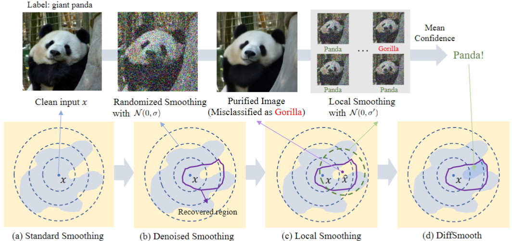
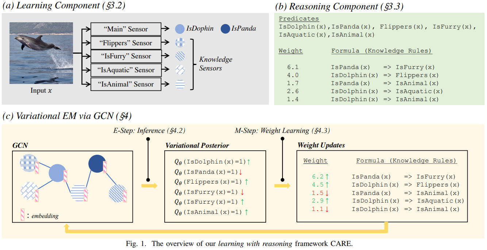
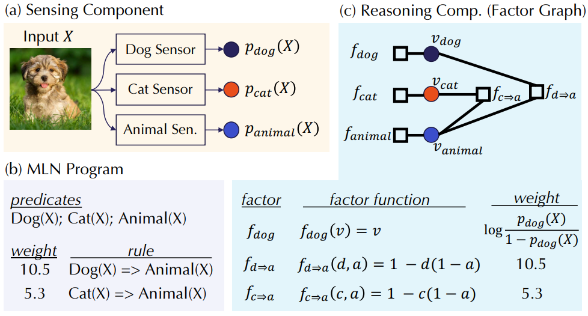
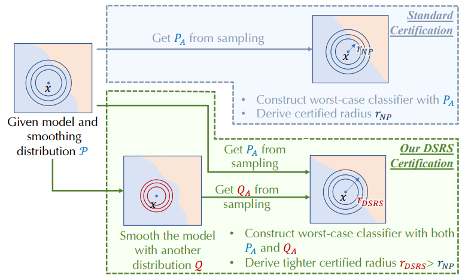
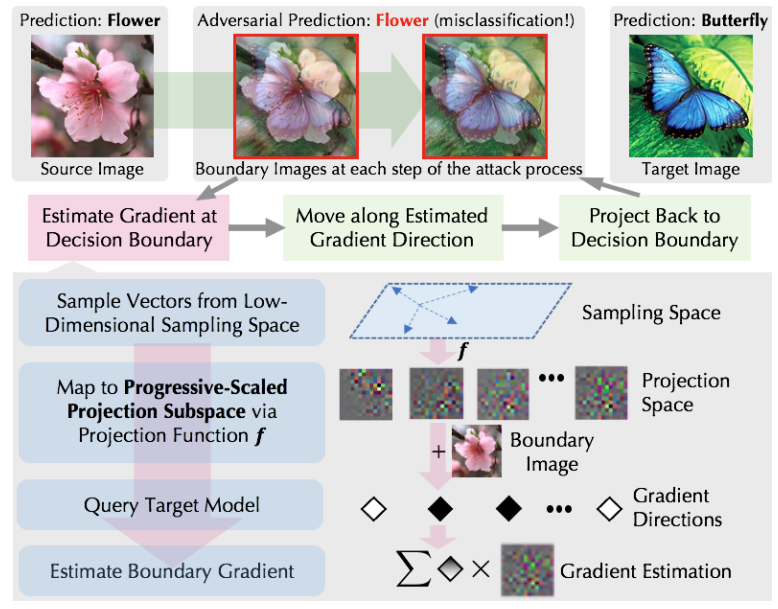

|
Jiawei Zhang
I am currently pursuing my Ph.D. in Computer Science at the University of Chicago, where I serve as a research assistant in the Secure Learning Lab under the guidance of Prof. Bo Li. Prior to this, I earned my Bachelor's degree from Zhejiang University.
My current research predominantly centers on Trustworthy Machine Learning, especially for Large Language Model (LLM). I’m particularly interested in enhancing their trustworthiness by mitigating issues like hallucination, using external knowledge sources as leverage. While my foundation in robustness, privacy, fairness, and explainability remains intact, my renewed focus aims at the integration of these principles into the development and understanding of LLMs, thereby ensuring they align more closely with human values and expectations.
Email /
CV /
Google Scholar /
Github
|
|
|
Publications and Preprints
|
|

|
DiffSmooth: Certifiably Robust Learning via Diffusion Models and Local Smoothing
Jiawei Zhang, Zhongzhu Chen, Huan Zhang, Chaowei Xiao, Bo Li
32th USENIX Security Symposium, 2023
- We theoretically show that recovered instances by diffusion models are in the bounded neighborhood of the original instance with high probability; and the “one-shot" denoising diffusion probabilistic models (DDPM) can approximate the mean of the generated distribution of a continuous-time diffusion model.
SOTA Certified Accuracy on ImageNet: 77.2%, 63.2%, 53.0% under L2 radius 0.5, 1.0, 1.5, respectively. As a comparison, the current best results are 71.1%, 54.3%, and 38.1%.
|
|

|
CARE: Certifiably Robust Learning with Reasoning via Variational Inference
Jiawei Zhang, Linyi Li, Ce Zhang, Bo Li
IEEE Conference on Secure and Trustworthy Machine Learning, 2023
- We propose a certifiably robust learning with reasoning pipeline (CARE), which consists of a learning component and a reasoning component. Concretely, we use a set of standard DNNs to serve as the learning component to make semantic predictions, and we leverage the probabilistic graphical models, such as Markov logic networks (MLN), to serve as the reasoning component to enable knowledge/logic reasoning.
|
|

|
Improving Certified Robustness via Statistical Learning with Logical Reasoning
Zhuolin Yang*, Zhikuan Zhao*, Boxin Wang, Jiawei Zhang, Linyi Li, Hengzhi Pei, Bojan Karlaš, Ji Liu, Heng Guo, Ce Zhang, Bo Li
NeurIPS, 2022
- This work provides the first knowledge-enabled, certifiably robust ML pipeline, sensing-reasoning pipeline, by combining statistical learning with logical reasoning. It first proves that the computational complexity of certifying the robustness of MLN is #P-hard and derives the first certified robustness bound for MLN by carefully analyzing different model regimes.
|
|

|
Double Sampling Randomized Smoothing
Linyi Li, Jiawei Zhang, Tao Xie, Bo Li
ICML, 2022
- This work exploits the sampled probability from an additional smoothing distribution to tighten the robustness certification of the previous smoothed classifier. Theoretically, under mild assumptions, we prove that DSRS can certify Θ(√d) robust radius under L2 norm where d is the input dimension, implying that DSRS may be able to break the curse of dimensionality of randomized smoothing.
|
|

|
Progressive-scale boundary blackbox attack via projective gradient estimation
Jiawei Zhang*, Linyi Li*, Huichen Li, Xiaolu Zhang, Shuang Yang, Bo Li
ICML, 2021
- The first theoretical framework to analyze boundary blackbox attacks with general projection functions and characterize the key characteristics and trade-offs for a good projective gradient estimator. Based on this, we propose Progressive-Scale based projective Boundary Attack (PSBA) via progressively searching for the optimal scale in a self-adaptive way under spatial, frequency, and spectrum scales.
|
|
{kind=link}